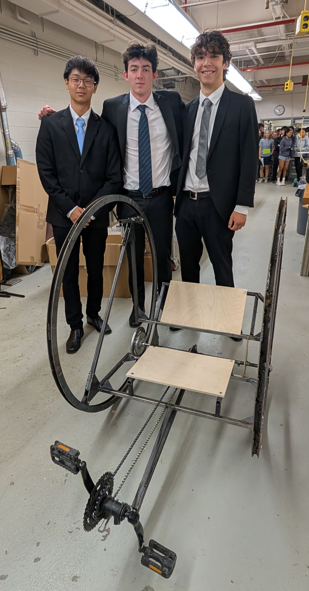
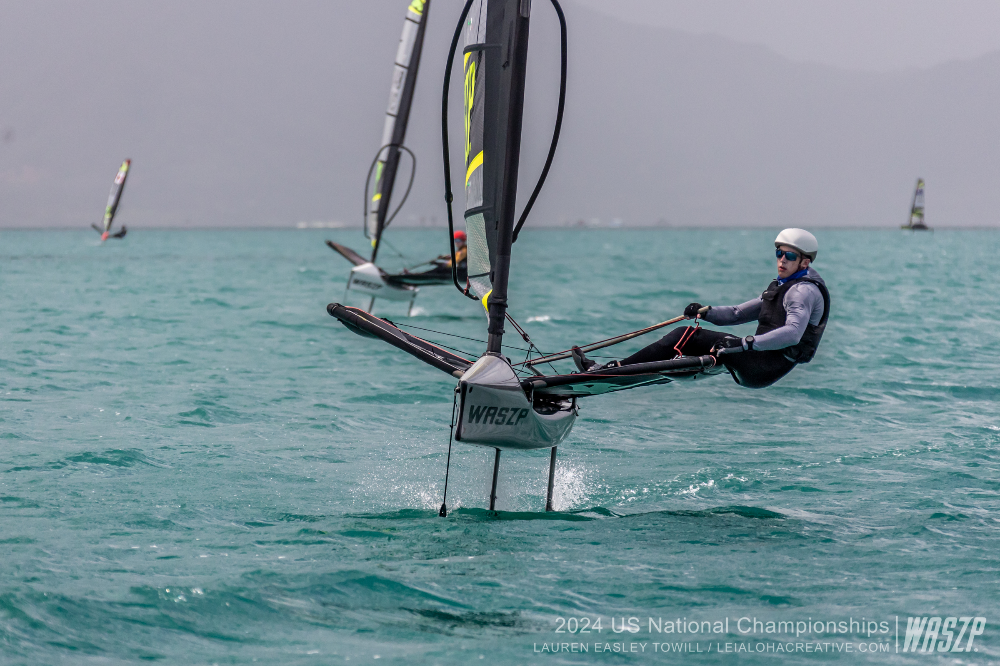
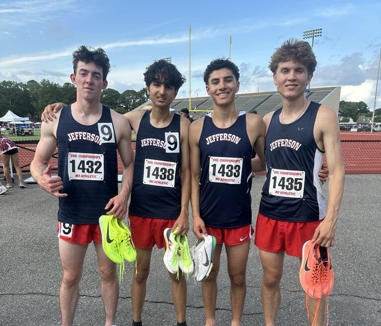
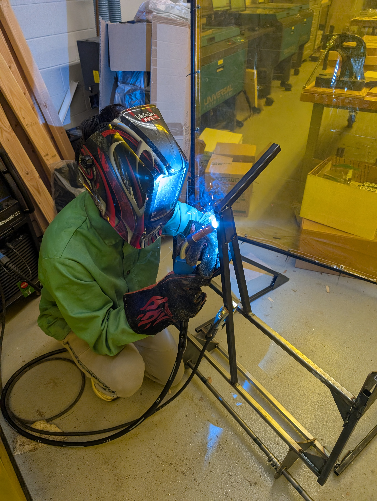
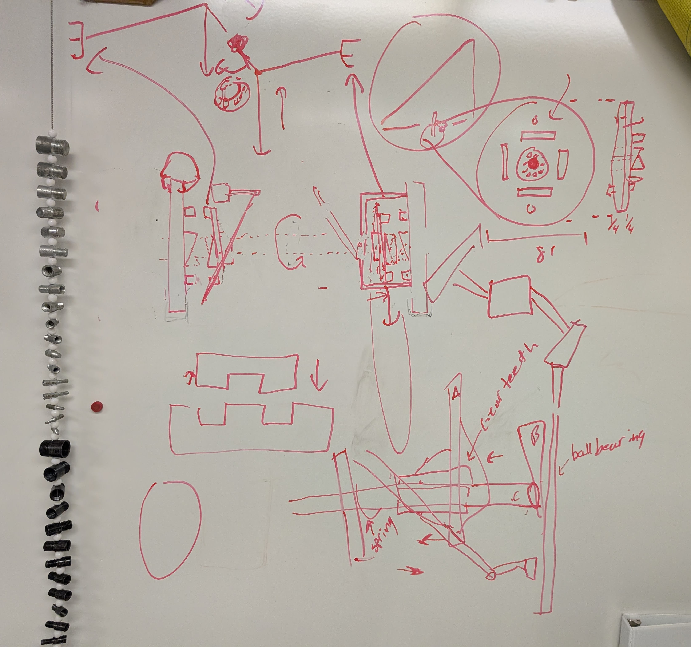
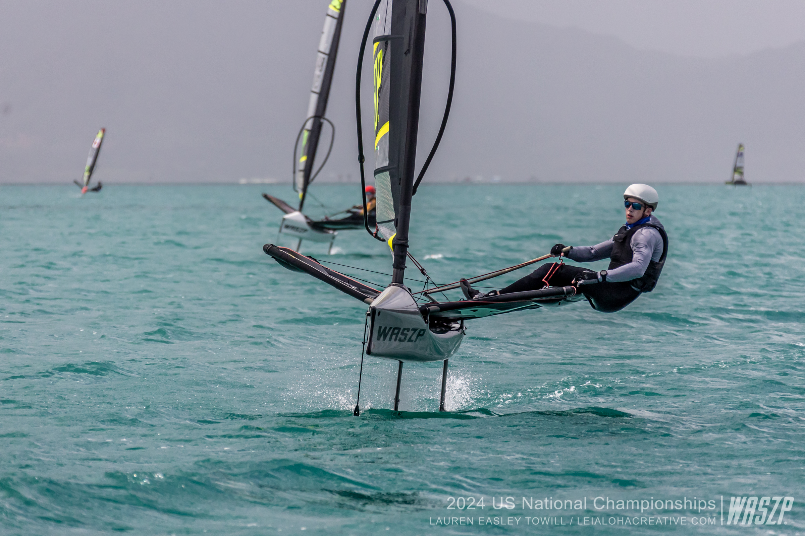
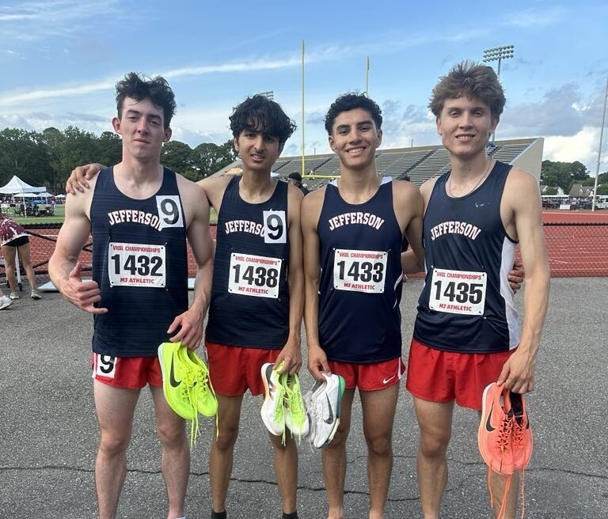
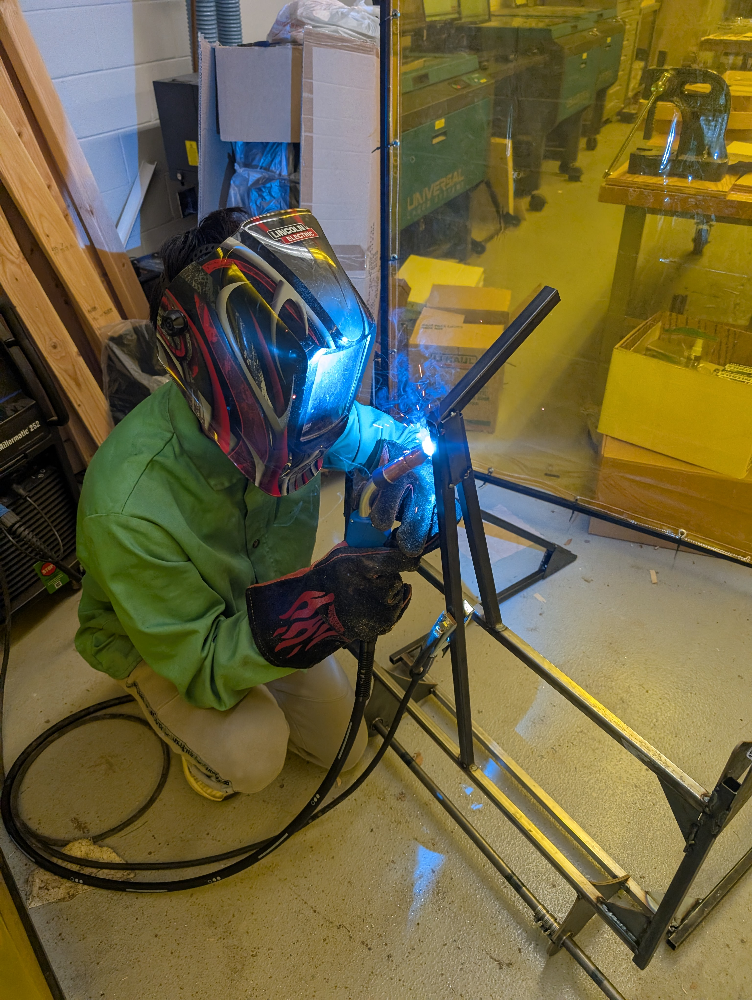
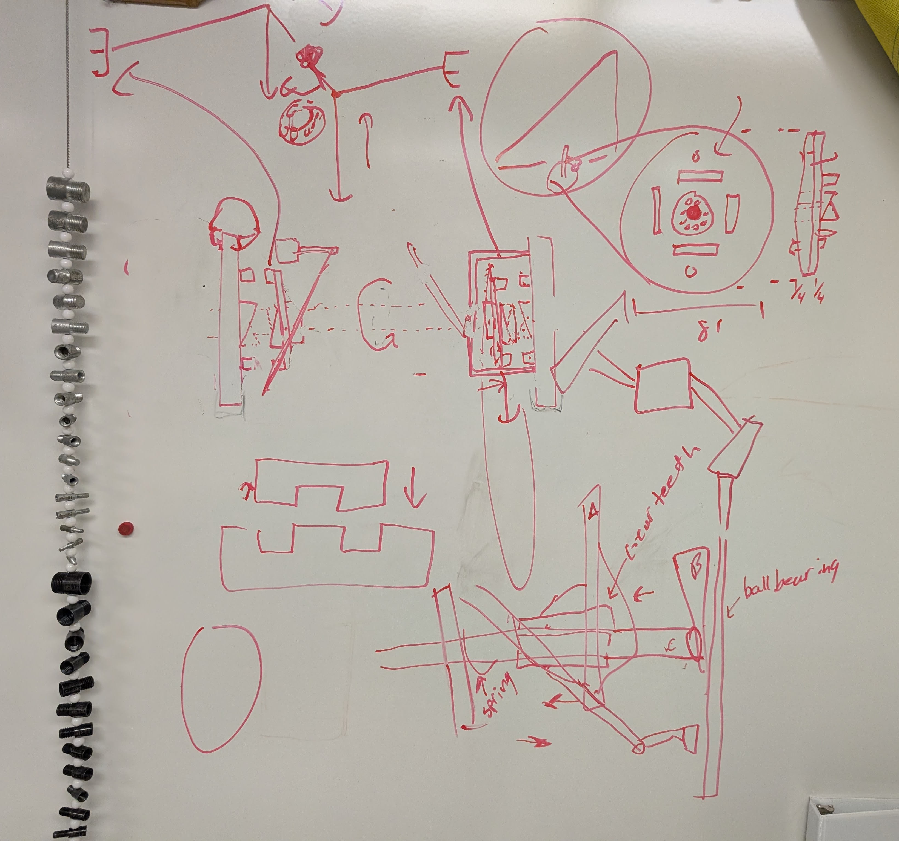

Engineering Projects
Pedal-Powered Diwheel
Designed and built an accessible, pedal-powered vehicle that puts a twist on the traditional bicycle, featuring parallel hubless wheels to improve low-speed stability.
View Full Paper → The Way I See Things (Work in Progess)
About Me
I’m Christopher Draper — an incoming mechanical engineering student at Purdue University, with a passion for building systems that move people forward, literally and figuratively. I grew up in Falls Church, Virginia, and graduated from Thomas Jefferson High School for Science & Technology, where I first discovered how far engineering can go when paired with purpose.
From prototyping a fully functional pedal-powered diwheel using hubless wheels to researching vehicle stability and drivetrain mechanics, I’ve always been drawn to the intersection of design, physics, and real-world impact.
At Purdue, I plan to build on that foundation by exploring the automotive and mobility sectors. I’m particularly interested in power transmission, dynamics, and mechanical architecture — how the pieces of a machine can reflect both elegance and engineering rigor. I also hope to get involved in project-based teams and industry-sponsored design programs, and pursue internships that challenge me in robotics, vehicles, or aerospace systems.
Outside of the lab, I stay grounded through high-performance sailing and rock climbing, two sports that demand adaptability, precision, and constant problem-solving. I’ve competed internationally in ILCA and WASZP sailboats, nationally in indoor climbing, and at the state level in track & field, while helping ignite a climbing club at my high school and mentoring others through the Boy Scouts as an Eagle Scout with a Gold Palm.
At my core, I’m a systems thinker who values clear communication, collaborative problem-solving, and the quiet satisfaction that comes from building something that works and lasts. Whether I’m on the water, in the machine shop, or writing code, I’m always chasing the same goal: to improve the world by understanding how it’s built.
 







Some Coursework
12th Grade
- Multivariable Calculus
- Linear Algebra
- AP Physics C: Mechanics
- AP Physics C: Electricity & Magnetism
- AP English Language
- AP US Government
11th Grade
- AP Calculus BC
- AP French Language
- AP US History
- Energy Systems
- Prototyping
- Artificial Intelligence
10th Grade
- AP Computer Science A + Data Structures